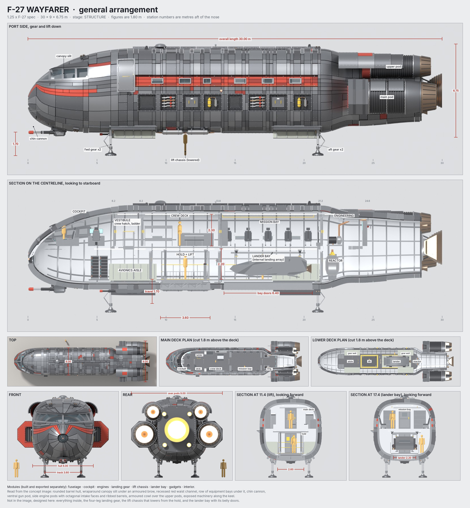
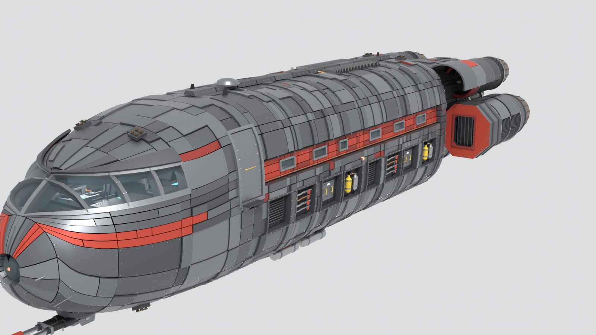
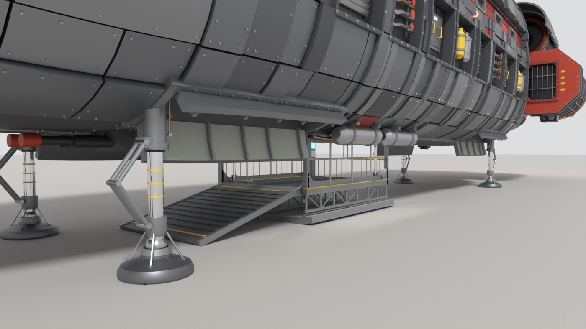

F-27 Wayfarer: sample
A boardable 30 m gunship built by code. The mesh is a build output and is never in the repository, so this page loads the one you build yourself. Drag to orbit, scroll to zoom, right-drag to pan.
Looking for a local build...
Go to
Show
Cutaway
Mechanisms
No local build found
Build the model, then reload. It takes a few seconds and needs Python with bpy (Blender as a module).
pip install bpy numpy cd assets/wayfarer/model python3 build.py --glb # out/wayfarer.glb, every bolt python3 build.py --glb --lod 1 # out/wayfarer_lod1.glb, no fasteners cd ../../.. && python3 -m http.server 8790 # open http://127.0.0.1:8790/assets/wayfarer/sample/
Renders of a build, for now:


